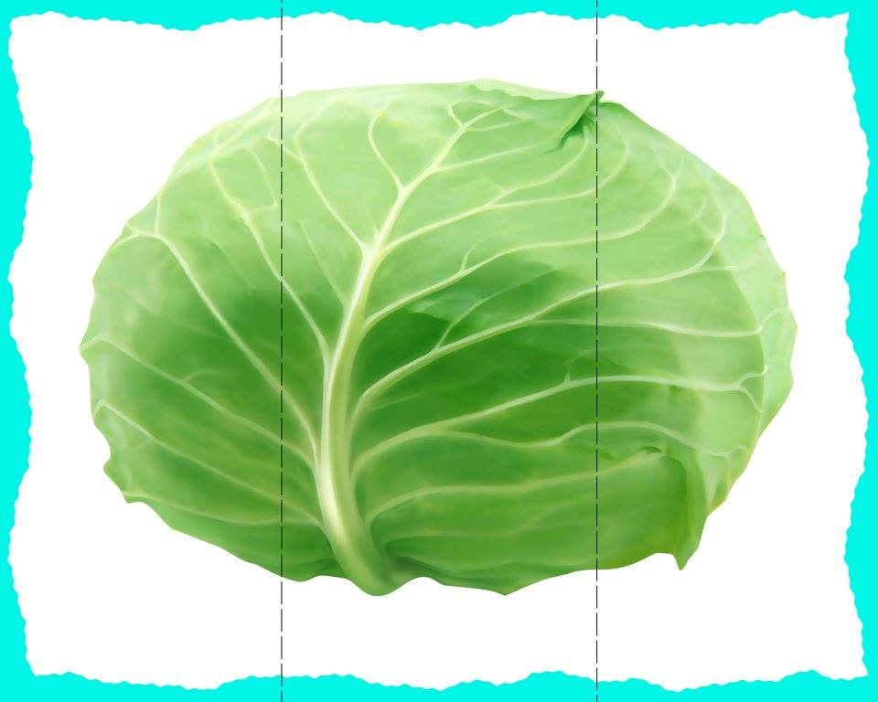

Orkaitėje keptos daržovės: šiltos ir spalvotos salotos ... Daržovės Rodoma 1–12 iš 17 Rūšiuoti pagal: Numatytasis rikiavimas Rikiuoti pagal populiarumą Rikiuoti nuo naujausių Rikiuoti pagal kainą (min → maks) Rikiuoti pagal kainą (maks → min)
Daržovės | Dėžėmis - vaisiai ir daržovės pigiau Daržovės – vienmečiai, dvimečiai ir daugiamečiai žoliniai augalai, kurių įvairios sultingos dalys vartojamos maistui. Mitybos prasme nuo daržovių skiriami vaisiai, kurie dažniausiai auga ant sumedėjusių augalų (medžių, krūmų, krūmokšnių) ir paprastai būna saldūs.
Daržovės, Daržovių patiekalai - Receptai | Patiekalai ORKAITĖJE KEPTOS DARŽOVĖS. 2 burokėliai, priklausomai nuo dydžio supjaustyti į keturias ar daugiau dalių 4 riekės moliūgo 4 morkos, perpjautos išilgai per pusę 2 pastarnokai, perpjauti ...
Daržovės - BARBORA Daržovės ir vaisiai Daržovės (8 5) 230 9309. Kasdien nuo 8 iki 21 val. El. p.: pagalba@barbora.lt. Daržovės ir vaisiai 215. Agurkai ir pomidorai 30; Paprikos ir baklažanai 14; Bulvės, morkos ir kopūstai 20; Svogūnai, porai ir česnakai 8 ...
Daržovės, vaisiai ir grybai | MAISTO PREKĖS | ShopTime.lt ... UAB Saldukas, amžina tradicija, visada pasiūlys įvairiausių prieskonių, prieskonių mišinių, prieskoninių žolelių, konditerijos žaliavų, džiovintų riešutų-vaisių ir daug kitų produktų iš Lietuvos ir viso pasaulio.
DARŽOVĖS - E-gulbelė Tel. +370 5 233 5340 info@auga.lt Nemokamas kokybės telefonas +370 800 11050 AUGA group, AB Konstitucijos pr. 21C, QUADRUM NORTH 08130 Vilnius
Daržovės – Skanaus! RECEPTAI, kurie įkvėps Jus gaminti! Čia jų rasite itin daug iš įvairiausių pasaulio šalių ir vietovių. Geri ir aiškiai aprašyti receptai, taip pat video receptai, kurie padės Jums pasigaminti ir ant stalo patiekti tik pačius skaniausius bei gardžiausius patiekalus! Geriausia vieta mėgstantiems gaminti.
Daržovės | Skelbimai | AgroLietuva.lt Daržovės – vienmečiai, dvimečiai ir daugiamečiai žoliniai augalai, kurių įvairios sultingos dalys vartojamos maistui. Mitybos prasme nuo daržovių skiriami vaisiai, kurie dažniausiai ...
daržovės - išsamiai DELFI.lt UAB Handelshus. Kodas: 221412030. PVM mokėtojo kodas: LT214120314. Naugarduko g. 102, 03160, Vilnius. Telefonas: +37068697707.
daržovės - išsamiai DELFI.lt
2020.10.29 08:07

Spalio 29 d., ketvirtadienis | Vilnius 11 Kaunas 10 Klaipėda 10 Šiauliai 9 Panevėžys 10 Alytus 10 Nida 9 Raseiniai 9 Utena 11 Mažeikiai 8 Biržai 10 Kėdainiai 10 Kiti miestai Paieška | Pranešti naujieną | LT RU EN | Reklama Kontaktai | Statistika | + Apie Delfi plius Prisijungti Naujausios Skaitomiausios Lietuvoje Sportas Orai Kriminalai Užsienyje Veidai Horoskopai Gyvenimas Mokslas Verslas Daugiau Sveikata Kultūra Auto M360 Politiko akimis Jaunimas Pilietis Nuomonių ringas Multimedija Teisė Medijos Karas Propaganda PT Melo detektorius Demaskuok Ačiū už pamokas Temos | Delfi Video
Naujienos
Naujausios Skaitomiausios Lietuvoje Sportas Kriminalai Užsienyje Veidai Gyvenimas
Verslas Mokslas Kultūra Sveikata Auto Pilietis Miestai M360 Politiko akimis
Delfi Video
Tiesioginės transliacijos Delfi Diena Delfi Dėmesio centre Laidos
Naudinga
Orai Horoskopai Receptai TV Programa Valiutų kursai
Delfi projektai
Multimedija Idėja Lietuvai Kablys Smalsūs EP Atsakingas požiūris Atgal į gyvenimą
Delfi kanalai
Agro Būstas Moterys Šeima Kelionės Grynas Stilius Maistas Letena Karjera Bored Panda Sek Delfi Mobilusis Delfi Naujausios žinios Naujienų temos Delfi Temos daržovės
daržovės
Daržovės – vienmečiai, dvimečiai ir daugiamečiai žoliniai augalai, kurių įvairios sultingos dalys vartojamos maistui. Mitybos prasme nuo daržovių skiriami vaisiai, kurie dažniausiai auga ant sumedėjusių augalų (medžių, krūmų, krūmokšnių) ir paprastai būna saldūs. Pvz., braškės ir bananai auga ant žolinių augalų, bet yra vaisiai, o ne daržovės.